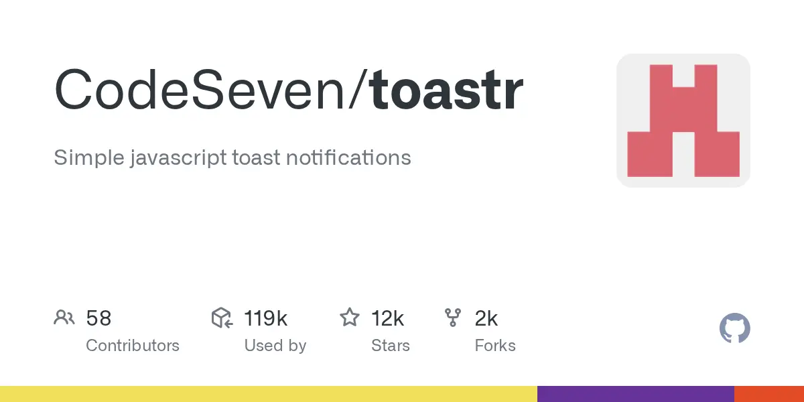
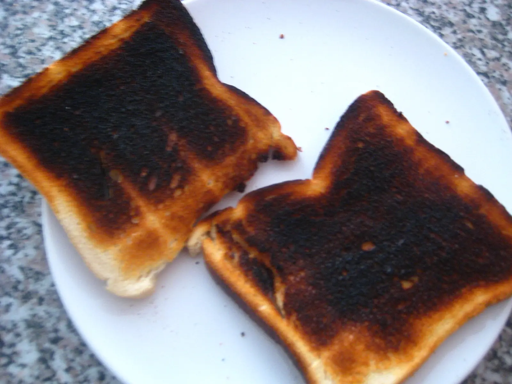
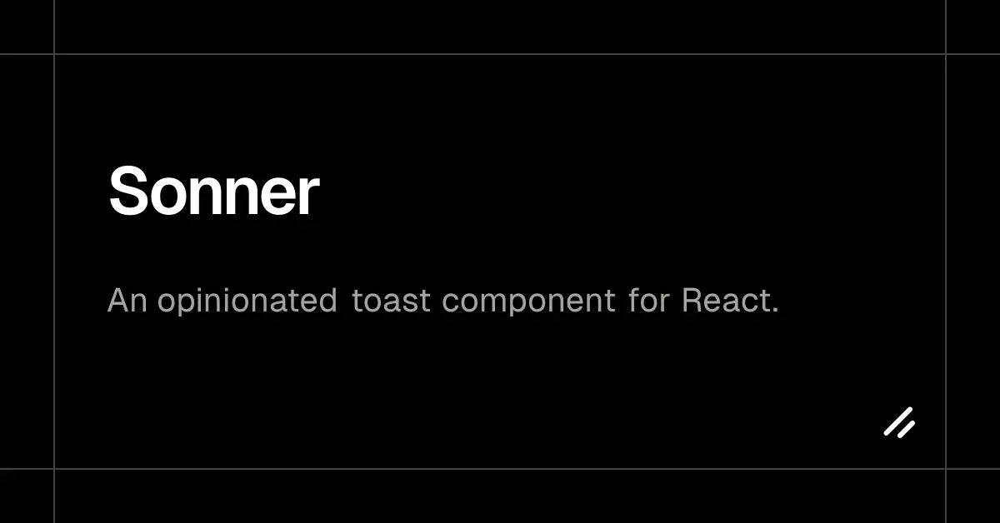
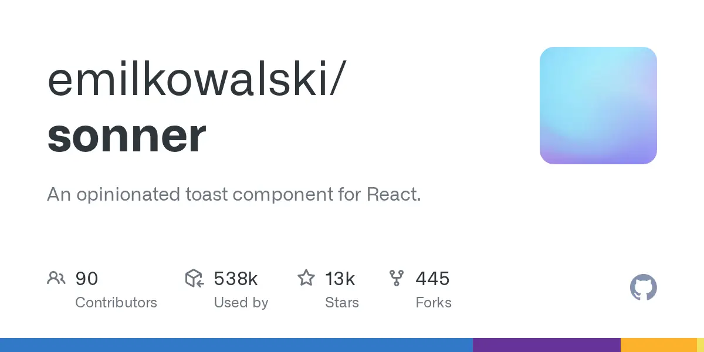
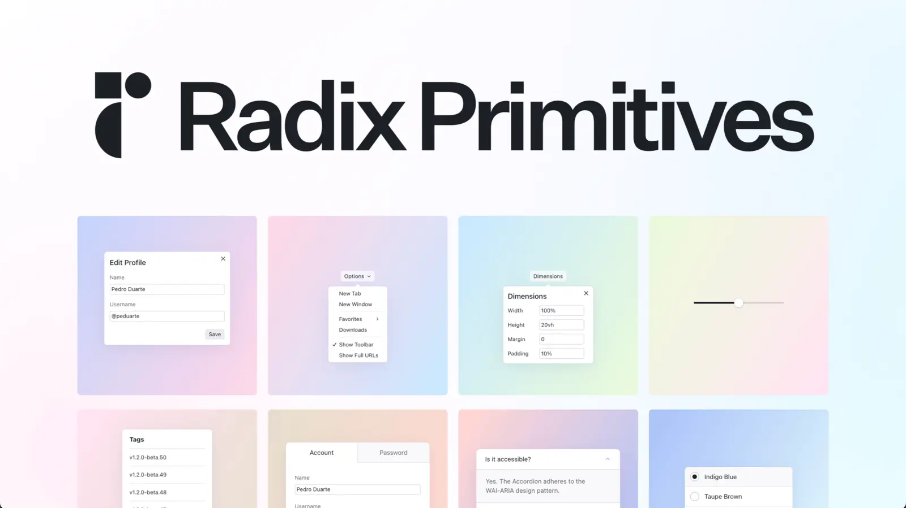
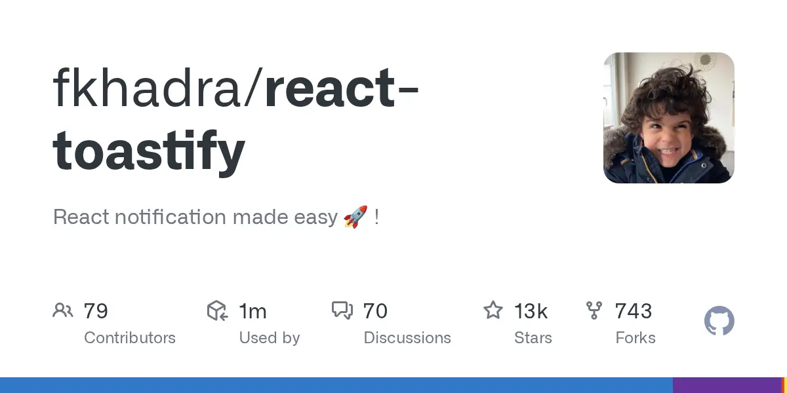
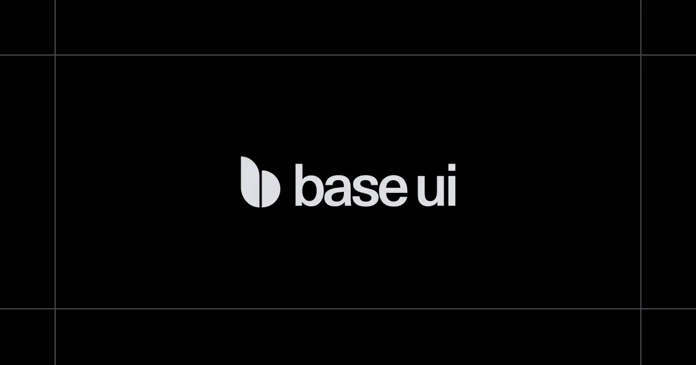

The library everyone installs
and the library that is
actually accessible
are not the same library.


119,000 repositories still depend on it. That number is the migration backlog, not a health signal — and it is the only thing in this expedition where the recommendation is unambiguous. Move. There is no counter-argument to make on behalf of a dead jQuery plugin.
this category.
Not merit.

shadcn/ui deprecates its toast
The Radix-based component is retired; every user is told to install Sonner instead.[3]

Sonner becomes the default
Not chosen library-by-library. Inherited, one npx shadcn add at a time, until it is 41M installs deep.

Radix Toast becomes a dead end
Still shipping fixes as of June 2026 — but abandoned by its largest consumer and slowing post-acquisition.[4]
library has the
quietest repo.

If you already run react-toastify, the case for churning a working integration is thin: it is alive, it ships, and it does not owe Sonner a migration. The 10× gap flatters the wrong axis.
Read the install count for what it is — a record of what a scaffolding tool typed for you in 2024 — and the ranking stops looking like a quality ordering.
an accessibility bill.
Screen-reader transcript · the same 4 seconds
A 4-second auto-dismiss with no way to extend it is a plain WCAG 2.2 SC 2.2.1 failure — timing adjustable.[6]
The correct model is not subtle and it is not new: mount the live region before the message arrives,[7] use a non-modal dialog for anything with a button, give the user a landmark hotkey to reach the thing.
The libraries that implement it — Base UI and React Aria — are the two nobody installs. That is the sharpest contradiction in this expedition: the recommended default and the accessible default are different libraries.

the server boundary.
All three major libraries ship "use client" at the top of their dist bundle,[8] so <Toaster /> drops into an App Router layout unchanged. None of them exposes a server-callable queue. A server mutation can only describe a toast and hand it across — and if the action calls redirect(), the caller unmounts before any return value arrives,[9] forcing a flash-cookie round trip you write yourself.
React Router 7 has had session.flash() for exactly this, all along.[10]
Take Sonner.
Know what
you are buying.
It is the right default — the ergonomics are genuinely good and the ecosystem has already voted with its scaffolding. But it is polite-only, its repo is the quietest of the group, and it will not fire a toast from a server action for you.
If you ship to a normal a11y bar
Install Sonner, raise the dismiss duration off 4 s, and accept that error toasts will not interrupt. Do not churn a working react-toastify integration to get here.
If you ship to a public-sector or enterprise a11y bar
Budget for the fixes — or build on Base UI Toast, stable since December 2025,[11] and write the CSS yourself. It is the only primitive in 2026 that is both stable and feature-complete.
And the standard itself has not settled: the W3C is still arguing about whether SC 2.2.1 even applies to toasts. The issue has been open since 2019.[12] Until it closes, every team ships a judgment call and calls it a default.
w3c/wcag #976 · open · 2019 → today